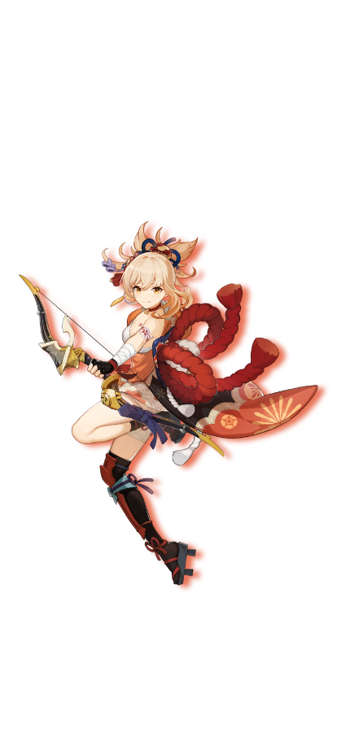

Genshin
She is the daughter of Naganohara Ryuunosuke and the current owner of Naganohara Fireworks. With her colorful fireworks and outgoing personality, Yoimiya is beloved by everyone on Narukami Island, who believe summer is not the same without her.
